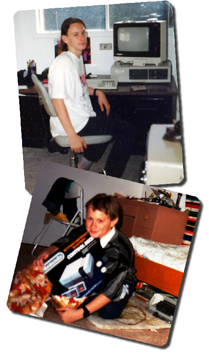
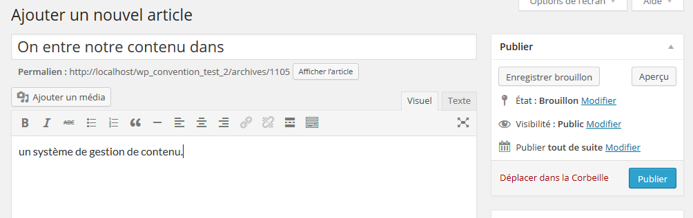
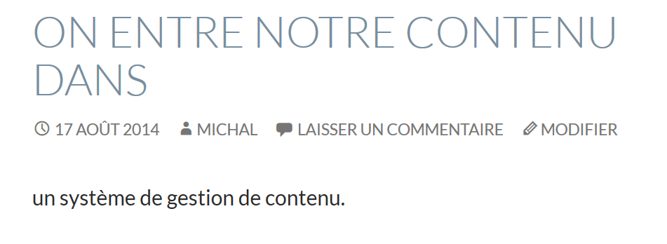
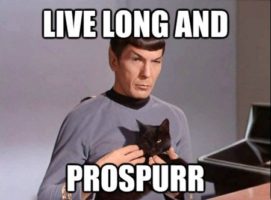

Comment présenter
du contenu sur mesure
sans vous emmêler dans la
« Connais-tu un thème qui… ? »
Ne choisissez pas vos thèmes selon leur fonctionnalité.
Ce dont on va parler
- Les sites dynamiques
- Comment on demande à WordPress ce qu'on veut (Les requêtes)
- Comment on affiche les résultats (La boucle)
- Les Custom Post Types
- Les métadonnées
Il y a longtemps, on construisait les pages web, une à une.

Depuis, on s'est simplifié la vie...
Entre les données
Envoie dans la BD
De la BD à la page
Qu'est-ce qu'on veut afficher?
(la requête)
Salut, WordPress! J’aurais besoin de contenu.
Cool! Je suis là pour ça! Qu’est-ce que t’as besoin?
Des Articles.
Excellent! J’en ai plein. Combien t’en veux?
Dix, ça va être bon!
Veux-tu des articles provenant d’une catégorie spécifique?
Pas vraiment. Je ne suis pas difficile.
Parfait. Devrais-je rester dans les articles qui ont un statut de « publié »?
Effectivement, ça serait bon. Je ne veux pas afficher les brouillons ou les articles postdatés.
Tantôt, on parlait de catégories…
Est-ce qu’il y a des termes spécifiques (tags) associés aux articles que tu veux?
Bof Pas vraiment… Attends! Oui, montre-moi seulement ceux associés à « nouvelles », « culture » et « WordPress ».
Pas de problème. Donc, 10 articles. Veux-tu les 10 plus récents en ordre chronologique décroissant ou les dix premiers?
Les 10 derniers.
J’ai vu que t’as des « Sticky Posts », des billets qui devraient être « à la une ». Est-ce que je te les affiche en premier, puis je continue jusqu’à ce que j’arrive à un total de 10?
Oh! Merci! Nice catch! Le client adore ses « Sticky Posts ». Commence avec ceux-là, s’il te plaît.
Bon… J’essaie de voir si j’oublie des questions, mais c’est pas mal ça qui me vient à l’esprit. As-tu d’autres demandes spéciales?
Non. C’est tout. Merci!
Paramètres
↓
Requête
↓
Si vous voulez avoir un petit mal de tête :
WP_Query dans le Codex

La boucle
(The Loop)
On a demandé 10 articles
Pour chacun, on va recevoir :
- Le titre de l’article
- Le contenu entré dans l’éditeur de contenu
- L’auteur de l’article
- L’heure et la date de publication de l’article
- Les catégories auxquelles l’article est associé
- Les « tags » associés à l’article
- ...
Attention!
Préparez-vous à la possibilité qu'aucun contenu ne vous sera retourné.
La vidéo de la boucle
Si vous voyez ceci, veuillez avancer puis reculer d'une diapositive.
...ou allez à http://youtu.be/bqWVxClIXkU
Boucle de 10 ou boucle de 1
…toutes pareilles!
À la base, WordPress gère
des Articles (« posts ») et des Pages*
*et quelques autres comme les menus, les pièces jointes et révisions
Pourquoi s'arrêter là?
On peut aussi gérer n'importe quoi d'autre
Avez-vous déjà utilisé les catégories pour gérer du contenu sur mesure?
Moi aussi!
On peut faire mieux!
Custom Post Types (« CPT »)
*LA* solution pour le contenu sur mesure
Comme exemple, on va prendre les « livres ».
On n'a qu'à déclarer notre type de contenu et WordPress va le traiter comme un article ou une page.
WordPress n'a pas besoin de savoir ce qu'est un livre.
Simplement qu'il existe.
Il y aura même un menu dédié dans l'admin.
Vos clients vont vous adorer!
On va se retrouver même avec
« Ajouter un livre »,
« Modifier un livre »,
« Supprimer un livre »
Lors de la requête, on peut demander du contenu de type livre
Au lieu de
« WordPress, trouve-moi 10 articles… »
On peut lui demander
« WordPress, trouve-moi 10 ‘livres’»
Dans la boucle, on parlait de recevoir :
- Le titre de l’article
- Le contenu entré dans l’éditeur de contenu
- L’auteur de l’article
- L’heure et la date de publication de l’article
- Les catégories auxquelles l’article est associé
- Les « tags » associés à l’article
- ...
Pour bien gérer nos livres, ça ne sera pas assez.
Dites bonjour aux...
Métadonnées
(« post_meta »)
Pour bien décrire un livre,
pourrait avoir besoin de :
- Le titre du livre
- La description / Synopsis
- L’auteur du livre
- La date de publication du livre
- La maison d'édition
- Un lien vers le site de la maison d'édition
- La couverture du livre
- Le graphiste responsable de la couverture
- Le numéro ISBN
- Le nombre de pages
- …
Les métadonnées seront utilisées sur deux plans :
Tableau de bord
Affichage sur le site
Tableau de bord
Dans le tableau de bord, nous utiliserons des Meta Box
Un petit aperçu de ce qui pourrait s'ajouter dans l'écran d'édition d'un livre :
Les champs de métadonnées peuvent être de n'importe quel type.
L'important, c'est de penser à quelles données vous aurez besoin.
Conseil!
Assurez-vous que vos utilisateurs ne puissent pas se tromper.
Allons vers l'avant!
L'affichage des métadonnées
Semblable au processus des articles et des pages.
On fait une requête :
« WordPress, trouve-moi 10 ‘livres’»
On passe à travers une boucle pour afficher les informations / métadonnées qu'on veut.
Comment vous affichez les données dépendra de vous.
Idées de
Custom Post Types
- Événements
- Recettes
- Animaux (refuge)
- Films
- Pièces de théâtre
- Membres de l'équipe
- Projets (portfolio)
- Mets sur menu de restaurant
- Nos succursales
- Nos clients
Suggestion
Planifiez sur papier avant de commencer à coder/appliquer.
Microdata
Qu'est-ce que t'essaie de me montrer?
Merci!
